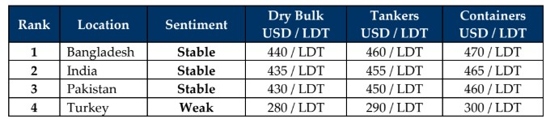

GMS Week 08 – FREIGHT FRUSTRATES!
in Weekly Demolition Reports 24/02/2025

A recent and ongoing uptick in freight rates across many sectors (especially dry, as wet rates have been performing far admirably in comparison) has resumed depriving global ship recycling markets of tonnage over the last couple of weeks and this has promptly manifested itself at the various sub-continent waterfronts this week in both India and even Pakistan that has now returned to an empty port position once again, resulting in a quieter time of late. Even the struggling Panamax sector saw a bounce in rates this week with owners of vintage 90s-built units seemingly managing to fix their vessels out yet again, eking out the ongoing remnants of earnings before their already life-extended assets eventually head for recycling. Whilst January saw a plethora of sales from the Panamax bulker and LNG sectors before the inevitable slowdown over Chinese New Year holidays and the release of Trump’s tariffs both of which delivered a fresh serving of market volatility, as further tariffs reportedly still remain in the works.
Speaking of tariffs, while the ones already implemented have kept the oil markets subdued of late, those tariffs still in the pipeline have pulled the barrel back closer to USD 70/barrel this week, as recent sanctions coupled with growing U.S. oil reserves could continue to see the barrel buoying around the early USD 70s in the near future. Whilst global economies adjust around these unfolding market dynamics, key fundamentals continue to see their shares of volatility given that local steel plate prices are either vacationing / laying horizontal in key markets while registering declines in others, and the U.S. Dollar, which remains of key concern for ship recycling nation currencies, which continue to decline whilst others struggle to re-adjust / likely to lose further ground.
As a result, ship recycling markets offerings have fallen by up to USD 30/LDT over the first month of the year and while further pressures on key drivers seem to have been working in unison to pull recycling offers further down, the lack of tonnage has seemingly found a price floor around USD 450/LDT despite indications far below on certain units are easily forthcoming. Now that workable and firm candidates are drying up, the ever-present hunger to buy might return in the final month of Q1 2025 as we have even seen Pakistan come back into the picture of late, securing a smaller LDT unit after a significant period on the sidelines. But it remains too little too late for a market that has seen just one arrival at the nation’s waterfront since Qct 2024. Moreover, despite Bangladeshi ship recyclers picking up the pace on respective facility and infrastructure upgrades, with the HKC finally entering into force by July of this year and urgent / pending yard upgrades are still needed in Chattogram and especially in Gadani, to ensure compliance with the convention now that a potentially bumper few years of tonnage supply and deal making lie ahead. As Alang buyers note the increasing presence of the Gadani Gang trying to take a bite out of their tonnage buffet at the bidding tables, they remain the epicenter of ship recycling West of Bangladesh with nearly all yards ready to operate post July 1 and business being as usual thereafter. Finally, Turkey continues to dissolve into its economic uncertainty as no meaningful market news has been forthcoming other than the steady descent of the Lira to where it is gradually approaching to half the value of the Indian Rupee. Times are changing.
For Week 8 of 2025, GMS Market Rankings / vessel indications are as below.

📄 Download PDF: Ship-recycling-market-insight-Week-08-02-21-2025-Freight_Frustrates.pdfSource: GMS,Inc. https://www.gmsinc.net/gms_new/index.php/web
 Translate
Translate{kind=link}